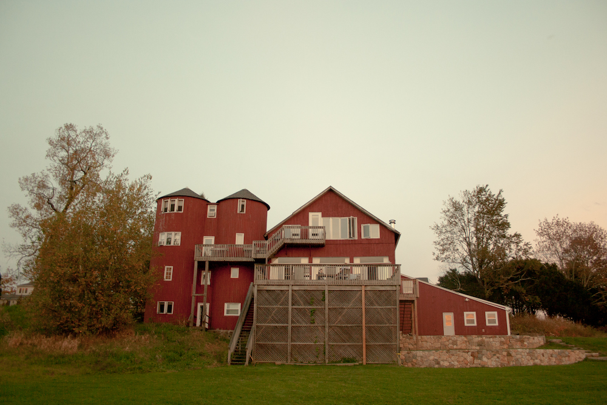
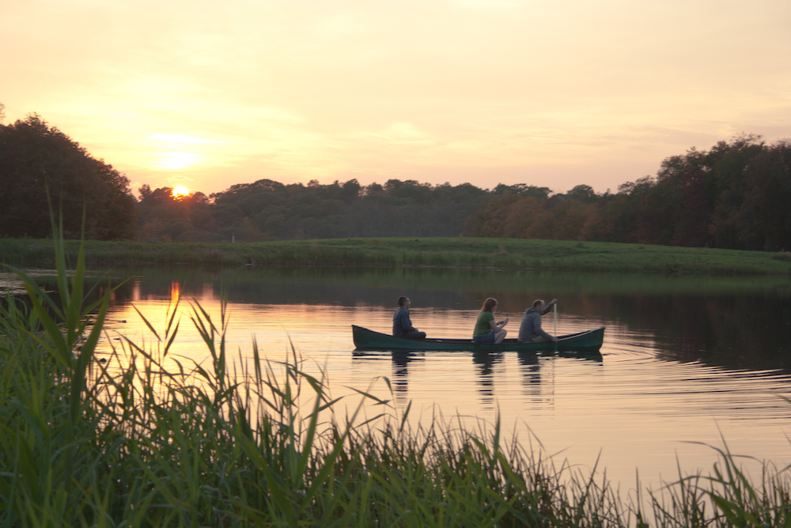

We wanted a spot that was pretty and retreat-esque, and an easy drive from Boston and New York. With plenty of beds. And wifi. We also wanted a place that was in a nice-enough location that we wouldn't feel cramped or stifled staying there for 3 days. We ended up at this restored barn in Litchfield CT and may I suggest that if you are planning a retreat in New England, skip the search and rent this place.
The living room was huge, like 4 living rooms all connected, with plenty of seats and corners to be quiet in, and a fireplace for s’mores. The bedroom are in the old silos, which was the universe’s way of giving a group of content strategists the perpetual giggles.
The farm we stayed in is on a working farm, looking out over a small lake with a canoe you can use. There are cows mooing in the distance. Birds all a-flutter, amazing sunsets, rural but not too remote. A perfect place to spend a weekend.
It turns out that this farm has 3 or 4 properties available, so if your group has more people, you could rent out a few places and convene in the giant barn during the day.
It’s easy to find a place that “sleeps 12”, but much harder to find a place that can accomodate that many people in individual beds. If you're searching AirBnB or VRBO, try looking for places that sleep 16+, or include a keyword like "group" or "bunkroom" in your searches.